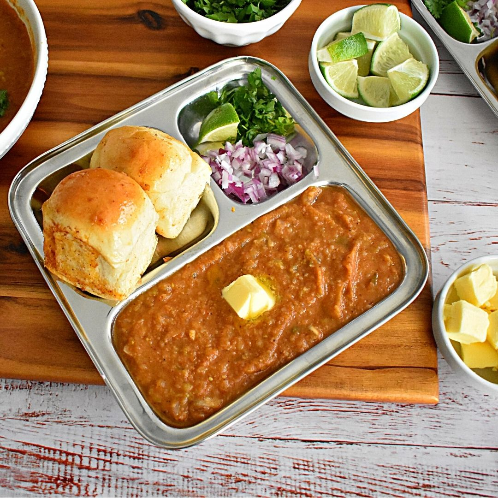

Pav Bhaji

Pav Bhaji is a fast food dish from Mumbai (Bombay), India, consisting of a
vegetable curry (bhaji) cooked in tomato gravy and served with a soft bread
roll (pav). While Bhaji is a traditional Indian name for a vegetable dish,
the Pav or Pao was the Portuguese word for bread, which was introduced by
them during their brief presence in Mumbai around the mid-1500s.
Ingredients
-
½ cup vegetable oil
-
2 teaspoons chopped garlic
-
1 teaspoon finely chopped green chile peppers
-
1 cup chopped onion.
-
1 cup chopped roma (plum) tomatoes
-
2 cups cauliflower, finely chopped
-
1 tablespoon lemon juice
-
½ tablespoon butter
-
1 tablespoon finely chopped green chile peppers
Steps
-
Heat the oil in a wok over medium heat. Saute garlic
and green chile for 30 seconds, then stir in onions
and ginger. Cook until onions are brown. Add tomatoes,
and cook until pasty. Stir in cauliflower, cabbage,
peas, carrots and potatoes. Season with pav bhaji
masala. Cover, and cook for 15 minutes, stirring
occasionally. Season with salt, and stir in lemon juice.
- Toast the dinner rolls, and spread lightly with butter.
Serve garnished with chopped onion, green chile and cilantro.
Home Page